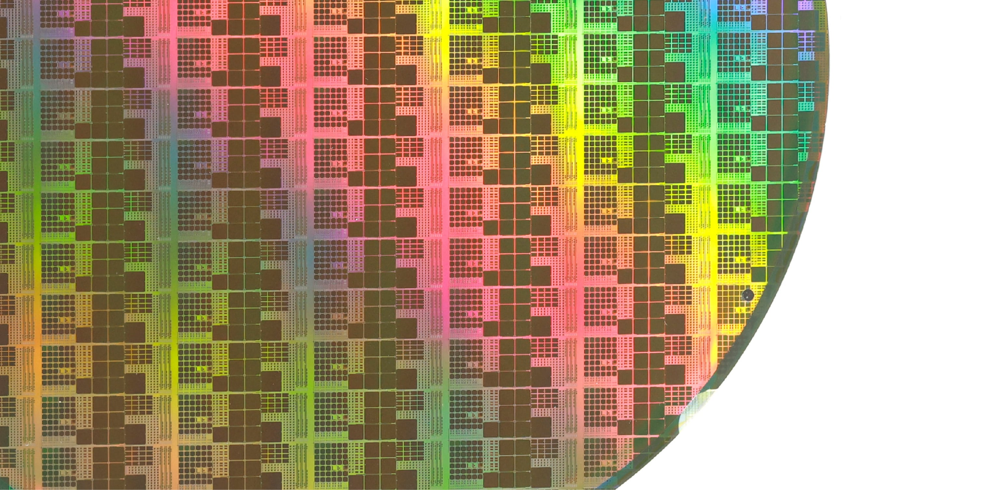
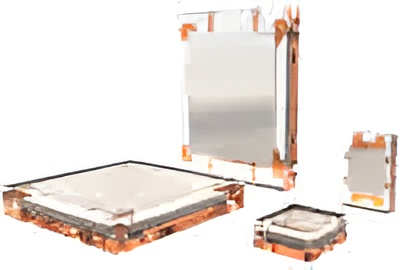
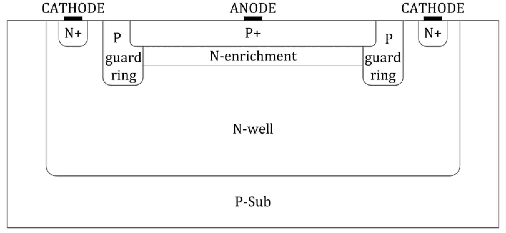
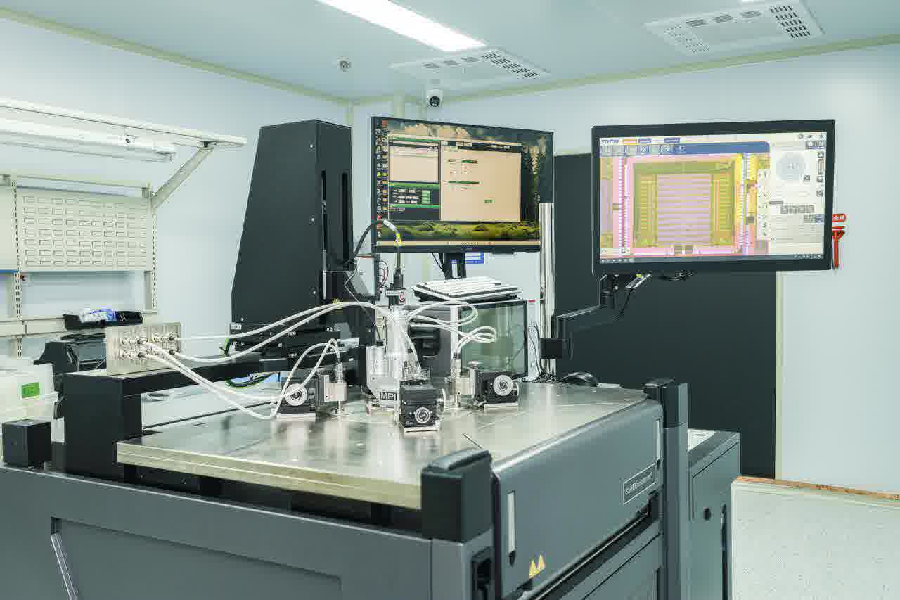
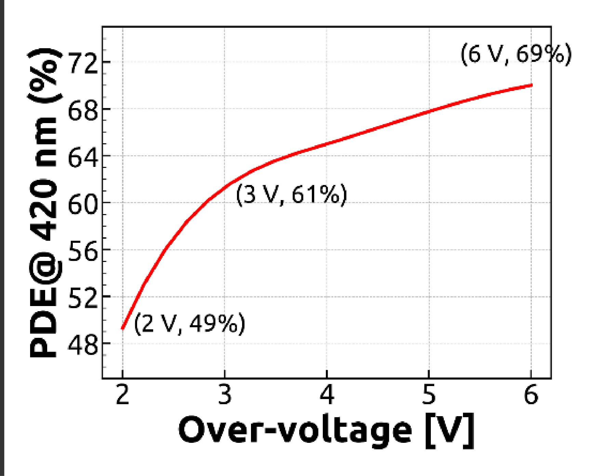
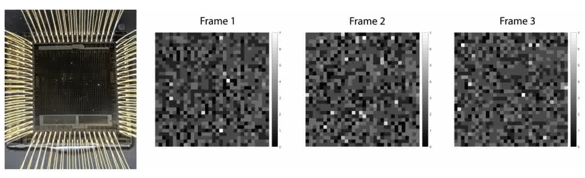

极弱光探测芯片
极弱光探测芯片研究组致力于新型硅光电倍增器芯片的设计与创新应用，攻克光子信号源头数字化难题，挑战弱光探测器件性能的物理极限，实现单光子级事件序列的探测与刻画。针对传统SiPM“数字（像素0/1输出）→ 模拟（电流加和模拟输出）→ 数字（ADC采样）”复杂读出框架带来的信息损失问题，提出了多阈值光电探测学术思想，设计了“数字（像素0/1输出）→ 数字（多阈值采样）”的新型全数字SiPM架构，该架构将采样源头从SiPM输出提前至单个像素，并且正在进一步将采样源头提前至光子发生处，实现逼近理论极限的时间及空间分辨能力。团队面向代表性应用场景中发展突破性应用示范和应用探索，坚持以应用需求驱动技术优化与迭代，引发相关领域连锁性技术突破与创新。
极弱光探测芯片研究团队目前正与其他机构合作伙伴一同寻求外部资金支持。如有意向，请发送邮件至 petlab@hust.edu.cn 与我们联系。
前沿进展
-

全球首个标准CMOS SiPM芯片
2017年基于0.35 μm 标准CMOS工艺研制了首个SiPM产品并完成性能表征。
-

实现43%光子探测效率
2019年基于0.35 μm 标准CMOS工艺实现了高达43%的光子探测效率（PDE）。
-

数字SiPM原型样片
2022 年研制了数字SiPM原型样片并完成了核心技术的测试验证。
-

采用 0.11 微米 CMOS 工艺，光子探测效率达 69%
基于0.11 μm 标准CMOS工艺将PDE进一步提高到了69% @6Vov ，达到现有CMOS SiPM最优的性能水平。单光子时间分辨率（50 ps）和串扰概率（ <5%）更超越定制化SiPM产品居世界第一。
-

全球首个多阈值光电倍增器MT SiPM芯片
团队创新性提出多阈值光电探测学术思想，设计了“数字（像素 0/1 输出）- 数字（多阈值采样）”的新型全数字SiPM架构，重建入射光子时间序列。这一研究的成功也标志着我们将光信号的数字化起点从SiPM输出提前至单个 MicroCell。
应用实现
应用探索
SiPM性能好、体积小、对磁场极不敏感，相比于传统的光电和成像器件如光电倍增管（PMT）和CCD等也具有独特优势。基于自研的SiPM和MVT芯片，我们正在进行一系列新型光学成像应用探索与示范：如光谱仪、弱光相机、中子成像、μ子成像等，以应用需求引领技术优化的方向。
最新新闻
6月23日
人民日报
确认患者摆位，按下启动按钮，检查床自动进入扫描位，探测器开始捕获射线数据……在湖北省鄂州市中心医院，被称为“癌症预警机”的全数字PET/CT（正电子发射及X射线断层成像）设备自去...
实验室纪事
我与优秀团队协同研发前沿技术，深耕具备现实应用价值的重点课题，年少时的科研理想终得实现。
Nicola D`Ascenzo
教授，博士生导师
单光子探测芯片的光子响应机理与信号处理方法
全数字硅光电倍增器(SiPM)
进一步探索
重点论文
A Low-Noise High-Photon Detection Efficiency Silicon Photomultiplier in 0.11-μm CMOS
Jan 16
IEEE Transactions on Electron Devices,
vol. 72, no. 2, pp. 769-777, Feb. 2025, doi: 10.1109/TED.2024.3520533.
Development and Evaluation of a Portable MVT-Based All-Digital Helmet PET Scanner.
Jan 23
IEEE Transactions on Radiation and Plasma
Medical Sciences, vol. 8, no. 3, pp. 287-294, March 2024, doi:
10.1109/TRPMS.2024.3357571.
A hybrid predictor–corrector network and spatiotemporal classifier method for noisy plant PET image classification
Jul 07
Phys Med Biol. 2025 Jul 7;70(14). doi:
10.1088/1361-6560/ade8cd.